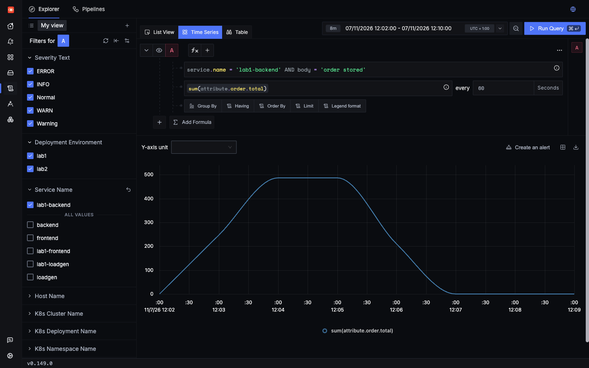
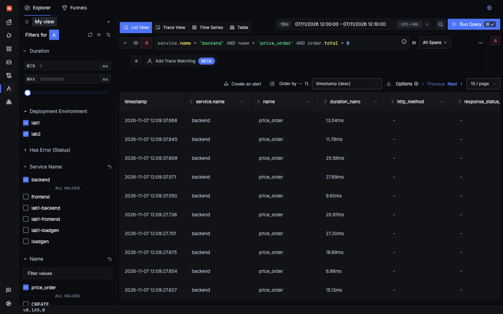
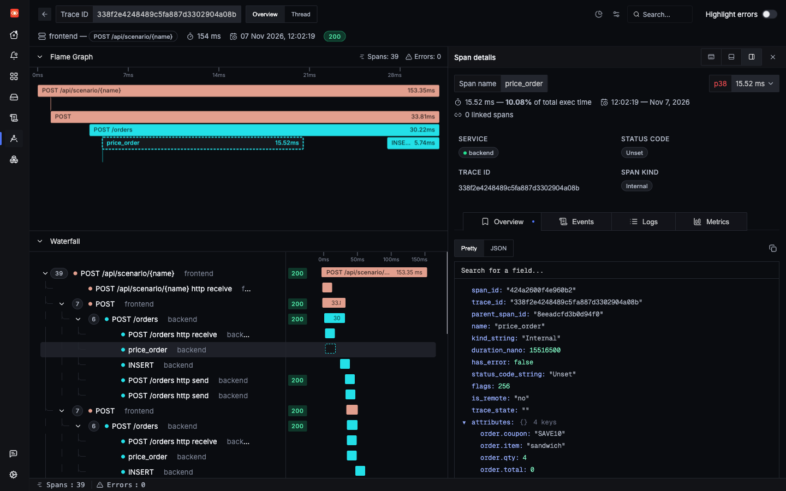
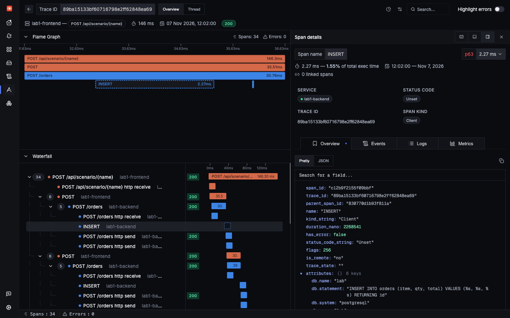
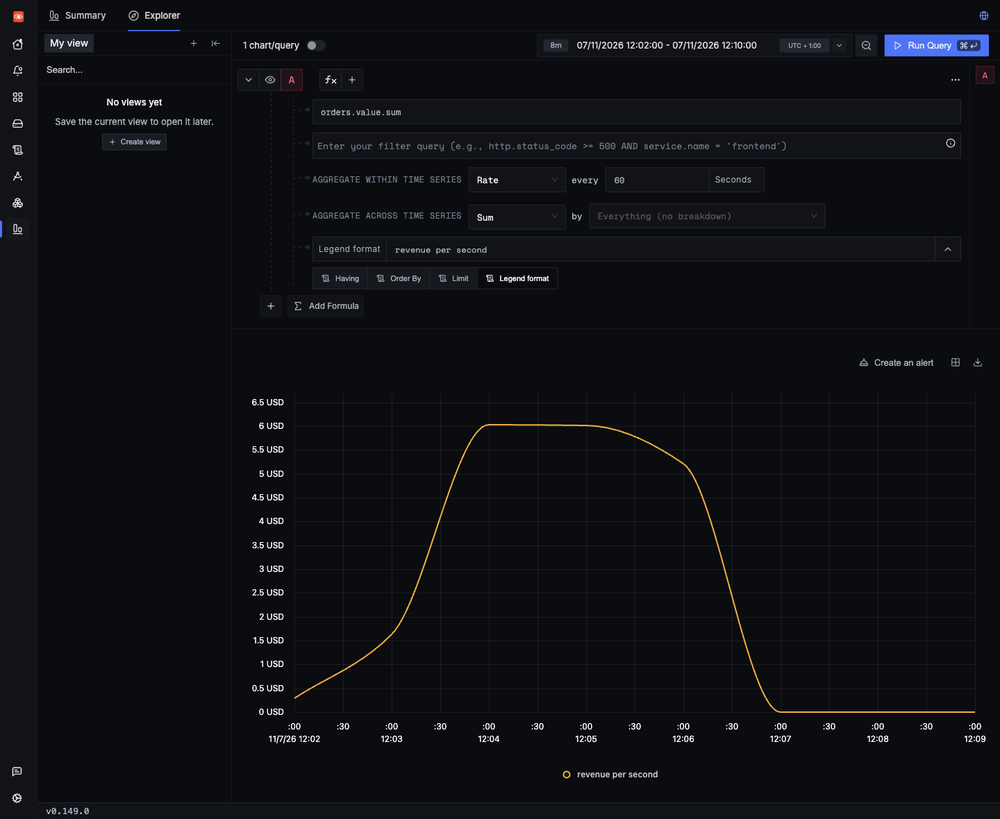

Lab 2: incident 2 of 4
Revenue dropped with no errors
Every request succeeds, and every chart that watches errors stays green. Meanwhile, orders are going out for free. Lab 1 can show you that it is happening, if the app happened to log the total. Only Lab 2 can show you why.
1Trigger it
The free_orders scenario places five orders with the coupon SAVE10. Fire it in both labs.
2Symptom
Nothing looks wrong. A saved run returned HTTP 200 in 151 ms from Lab 1, with this response:
{"scenario": "free_orders", "status": 200, "result": {"orders": 5, "revenue": 0.0}}That revenue figure comes from this scenario adding up its own five orders. A real app wouldn't report it. In real life you find out from a finance report, days later.
3Where to look
Error searches and error rates won't help here, because nothing failed. You need something that knows about money.
4Search
Lab 1
Errors first. There are none:
Next, the SQL. The total is stored by an INSERT, so it should be on that span, but it isn't:
Why the values are missing from db.statement
Look at how the app runs that statement:
labs/lab1-hands-off/app/backend.py lines 83–8583 row = conn.execute(
84 "INSERT INTO orders (item, qty, total) VALUES (%s, %s, %s) RETURNING id",
85 (order.item, order.qty, total),The SQL text and the values are two separate arguments. The %s markers are placeholders, and psycopg sends the values alongside the statement. The instrumentation records the first argument, so db.statement holds the statement and never the values.
That default is deliberate. Values can hold names, emails and other personal data, and those shouldn't end up in telemetry by accident. It also keeps the number of different statements small, so grouping by statement works. The instrumentation does have a capture_parameters option, which is off by default. That was confirmed by reading the installed source in a running pod, but it was not tried here Untested.
What's left is the logs. The app logs the total, so you can find the free orders, and even chart revenue:

So Lab 1 can show that revenue fell. It can't show why, because the app never logs the coupon:
Lab 2
The same zero totals are on the span, with the cause right next to them:


price_order span. Seen in SigNoz UI order.coupon and order.total sit side by side: four sandwiches for nothing.And orders.value is a metric, so revenue can be charted and alerted on without searching logs:
5Evidence
Lab 1

INSERT for a free order in Lab 1. Seen in SigNoz UI db.statement has placeholders, not the total.Lab 2
A real revenue drop
To see the shape of this, both labs received normal orders for 3 minutes, then coupon orders at about the same rate for 3 minutes. These are real per-minute figures. Lab 1's come from logs, and Lab 2's come from the orders.value metric:
| Minute (UTC) | Orders placed | Lab 1 orders | Lab 1 revenue | Lab 2 orders | Lab 2 revenue |
|---|---|---|---|---|---|
| 11:04 | Normal | 31 | 487.55 | 30 | 361.55 |
| 11:05 | Normal | 30 | 487.70 | 30 | 360.95 |
| 11:06 | Coupon orders start at 11:06:38 | 34 | 210.05 | 32 | 312.70 |
| 11:07 | Coupon | 30 | 0.00 | 30 | 0.00 |
| 11:08 | Coupon | 30 | 0.00 | 30 | 0.00 |
Lab 1 and Lab 2 differ because each order is random. Within Lab 2, the metric and the logs agree exactly over the whole run: 186 orders and 1,133.45 of revenue. They can differ slightly in any one minute, because metrics are exported every 10 seconds.

orders.value metric. Seen in SigNoz UI The same drop, from a metric you could alert on.Order counts hold steady while revenue goes to zero. That is the whole incident in one table, and neither row contains an error.
| Question | Lab 1 | Lab 2 |
|---|---|---|
| Did anything fail? | No | No |
| Is the total in the SQL? | No, only placeholders | No, only placeholders |
| Can you see free orders? | Yes, in logs, because the app logs the total | Yes, on spans and logs |
| Can you chart revenue? | Yes, from logs | Yes, from logs or the metric |
| Can you see the coupon? | No, nobody logged it | Yes, order.coupon |
6Root cause
labs/lab2-custom-dimensions/app/backend.py lines 87–10087def price_order(order: OrderIn) -> float:
88 # Manual span: shows up as a child of the request span, with attributes.
89 with tracer.start_as_current_span("price_order") as span:
90 span.set_attribute("order.item", order.item)
91 span.set_attribute("order.qty", order.qty)
92 # Deliberate bug: pricing is very slow for this one item.
93 time.sleep(1.5 if order.item == "catering" else random.uniform(0.005, 0.03))
94 total = round(PRICES.get(order.item, 5.0) * order.qty, 2)
95 # Deliberate bug: this 10% coupon makes the whole order free.
96 if order.coupon == "SAVE10":
97 span.set_attribute("order.coupon", order.coupon)
98 total = 0.0
99 span.set_attribute("order.total", total)
100 return totalA coupon meant to take 10% off sets the total to zero instead. Nothing raises an error, because to the code this is a valid number. Only someone who knows what the number should be can see that it is wrong.
7Resolution
Apply the discount properly:
if order.coupon == "SAVE10":
span.set_attribute("order.coupon", order.coupon)
- total = 0.0+ total = round(total * 0.9, 2)Try the fix
- Change it. Make that edit in
labs/lab2-custom-dimensions/app/backend.py, and save it. - Deploy it, from the repo's root. Saving the file isn't enough, because the pods run the image from the last build. What this command does.
make lab2 - Fire the same request in Lab 2.
revenuein the response should now be above 0. - Re-run the search, Orders priced at zero, with a time range that starts after you deployed. It should match nothing. In our run it went from 5 matches to 0.
- Undo the fix when you're done. The bugs in this lab are there on purpose. With the fix deployed, this page's button can no longer show the incident, for you or anyone else using this copy of the lab.
git restore labs/lab2-custom-dimensions/app/backend.py make lab2
Then make sure you hear about it next time. A fresh install has no alerts, so you would write a rule on orders.value.sum yourself (gap 5).
Check yourself: Why does db.statement show VALUES (%s, %s, %s) instead of the real numbers?
Check yourself: Lab 1 can chart revenue from logs. What can it still not tell you?